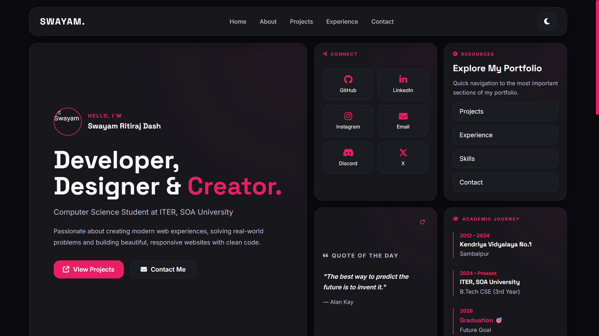
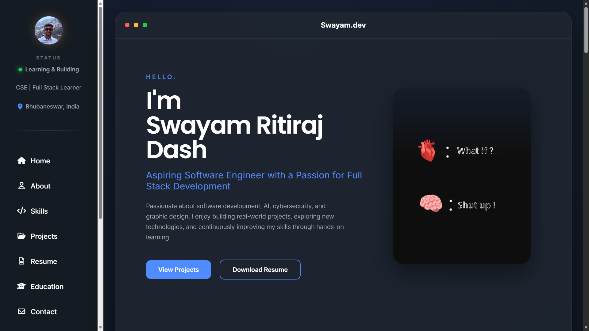
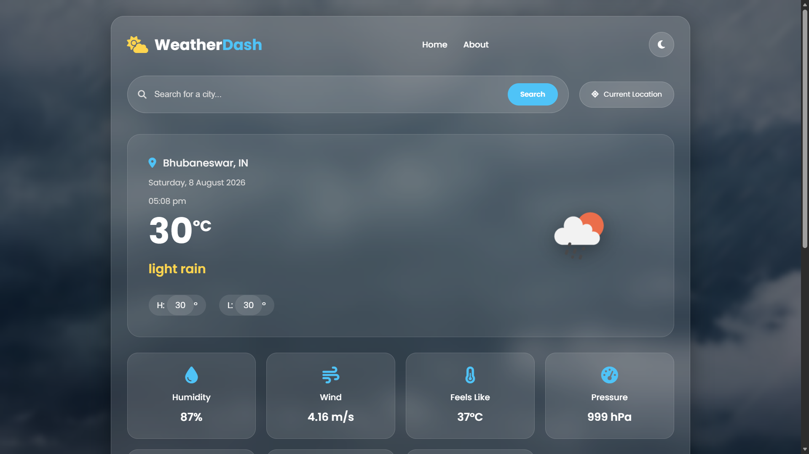

Turning ideas into real projects.
A collection of projects that reflect my journey in web development, problem solving and design. Every project helped me learn something new.

Modern Developer Portfolio
A premium multi-page developer portfolio featuring a Bento Grid-inspired layout, dark/light theme, responsive design and smooth animations.

Personal Portfolio (Django)
A personal portfolio website developed using Django, showcasing projects, certifications, skills and contact information with a responsive design.

Weather Dashboard
A responsive weather dashboard that displays real-time weather information using JavaScript and external weather APIs.
SafeHer
An AI-powered women's safety support system built with Django, focused on emergency assistance, secure location sharing and SOS features.